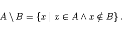

Inhalt Index DeskTop Bronstein

 Algebra und Diskrete Mathematik Mengenlehre Operationen mit Mengen
Algebra und Diskrete Mathematik Mengenlehre Operationen mit Mengen


Außer den in den vorhergehenden Abschnittenen für zwei Mengen A und B eingeführten Mengenoperationen werden noch die Differenzmenge oder Differenz die Diskrepanz oder symmetrische Differenz  sowie das kartesische Produkt A x B erklärt.
sowie das kartesische Produkt A x B erklärt.
|  | (5.63a) |
Wird A durch die Eigenschaft E1 und B durch die Eigenschaft E2 beschrieben, dann liegen in  die Elemente, die zwar die Eigenschaft nicht aber die Eigenschaft E2 besitzen.
die Elemente, die zwar die Eigenschaft nicht aber die Eigenschaft E2 besitzen.
In der linken Abbildung ist die Differenz zweier Mengen schattiert dargestellt.
| Beispiel |
|
|
| (5.63b) |
Aus der Definition folgt, daß gilt
| (5.63c) |
d.h. die symmetrische Differenz enthält die Eelemente, die genau eine der beiden Eigenschaften E1 (zu A) und E2 (zu B) besitzen. In der rechten Abbildung ist die symmetrische Differenz schattiert dargestellt.
| Beispiel |
|
|
Die Elemente (a,b) von A x B heißen geordnete Paare und sind durch
| (5.64b) |
charakterisiert.
Die Anzahl der Elemente im kartesischen Produkt zweier endlicher Mengen beträgt
| (5.65) |
| Beispiel |
|
Für A={1,2,3} und B={2,3} ergibt sich A x B = {(1,2),(1,3),(2,3),(2,3),(3,2),(3,3),} und B x A = {(2,1),(2,2),(2,3),(3,1),(3,2),(3,3)} mit . |
| Beispiel |
|
Mit dem kartesischen Produkt ( |
| (5.66a) |
Sind alle Ai endliche Mengen, dann beträgt die Anzahl der geordneten Elemente
| (5.66b) |
Hinweis: Das n-fache kartesische Produkt einer Menge A mit sich selbst wird mit An bezeichnet.